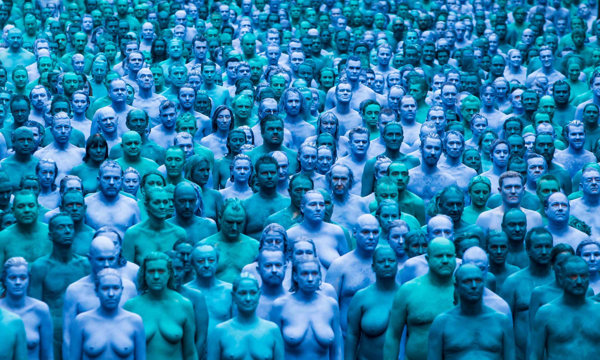

Jack Radley is a writer, curator, and artist based in Brooklyn, NY.
His reviews, interviews, and studio visits have been published in Artsy, Berlin Art Link, Boston Art Review, Cultured, Hyperallergic, Northwestern Art Review, Sixty Inches from Center, and Temporary Art Review, among other publications.
Radley has curated projects at the Mildred Lane Kemper Art Museum and The Dark Room, in collaboration with For Freedoms. He has produced and organized festivals and symposia at the .ZACK, Pulitzer Arts Foundation, and NYU.
Radley’s work has been exhibited nationally and internationally at venues including Contemporary Art Museum St. Louis, Granite City Art and Design District, Des Lee Gallery, Kranzberg Arts Foundation, Weitman Gallery, and KulturRaum Zwingli-Kirche. He has worked as a studio assistant for artists including Alan Sonfist, Monika Weiss, Jamie Adams, and Michael Powell.
He holds a BFA in Studio Art and Art History, magna cum laude, from Washington University in St. Louis and studied new media and performance at the Universität der Künste Berlin.
Radley currently works at Creative Time. He previously held posts at the Peggy Guggenheim Collection (Venice), Alden Projects (New York), Institute of Contemporary Art / Boston, Contemporary Art Museum St. Louis, Saint Louis Art Museum, Parapet Real Humans (St. Louis), and the Mildred Lane Kemper Art Museum (St. Louis).
jack.paul.radley@gmail.com
@jack__radley
CV available upon request.

Find Jack Radley in Spencer Tunick’s Sea of Hull. Photograph: Danny Lawson/PA
Disambiguation: If you arrived here by mistake in search of the adult film star of the same name—and comparable talents—please click here. (NSFW).